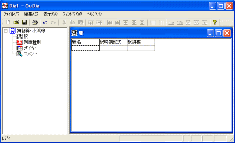
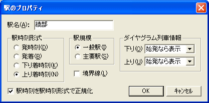
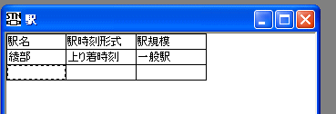
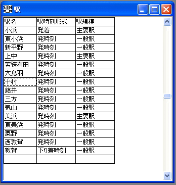

路線の駅の一覧を入力します。
[路線ビュー]の[駅]アイコンをクリックしてください。
・・・ 『作業領域』に、[駅] という名前のウインドウが現れます。以後、このウインドウを『駅ビュー』と表記します。

（図：駅ビュー）
『駅ビュー』は、『グリッド形式ビュー』（Microsoft Excel のような、表形式のビュー）です。
１． 『駅ビュー』のフォーカスセルが一番下の行にある状態で、メニュー[編集]→[駅を挿入]を選択してください。
・・・ [駅のプロパティ] ダイアログが開きます。
 『駅ビュー』のフォーカスセルが一番下の行にある状態で、 [Ctrl]+[Ins] キーを押しても、同じ効果があります。
『駅ビュー』のフォーカスセルが一番下の行にある状態で、 [Ctrl]+[Ins] キーを押しても、同じ効果があります。
 『駅ビュー』の一番下の段のセルをダブルクリックしても、同じ効果があります。
『駅ビュー』の一番下の段のセルをダブルクリックしても、同じ効果があります。
 『駅ビュー』のフォーカスセルが一番下の[駅名]列にある状態で、キーボードから駅名の入力を開始することができます。
『駅ビュー』のフォーカスセルが一番下の[駅名]列にある状態で、キーボードから駅名の入力を開始することができます。
２． [駅のプロパティ]ダイアログに、駅の情報を入力してください。

（図：駅のプロパティ）
[駅のプロパティ] の項目には、以下のような意味があります。
| [駅名] | 駅名を指定してください。省略できません。 | |
| [駅時刻形式] | これは、『時刻表ビュー』での、この駅の書式を示します。 | |
| [発時刻] | この駅は『時刻表ビュー』では、発時刻のみを表示します。一般の途中駅では、これを指定してください。 | |
| [発着] | この駅は『時刻表ビュー』では、着時刻・発時刻の両方を表示します。長時間停車する列車の多い途中駅（主要駅や待避可能駅）では、これを指定します。 | |
| [下り着時刻] | この駅は、下りの『時刻表ビュー』では着時刻のみ表示・上りの『時刻表ビュー』では発時刻のみ表示となります。下り列車の終点、もしくは終点付近の途中駅で使います。 | |
| [上り着時刻] | この駅は、上りの『時刻表ビュー』では着時刻のみ表示・下りの『時刻表ビュー』では発時刻のみ表示となります。上り列車の終点、もしくは終点付近の途中駅で使います。 | |
| [駅規模] | これは、『ダイヤグラムビュー』での、この駅の書式を指定します。 | |
| [一般駅] | この駅は、『ダイヤグラムビュー』では細い横線であらわします。 | |
| [主要駅] | この駅は、『ダイヤグラムビュー』では太い横線であらわします。 | |
| [境界線] | チェックをONにすると、下りの『時刻表ビュー』では、この駅の下に横罫線がつきます。上りの『時刻表ビュー』では、この駅の上に横罫線がつきます。 | |
| [ダイヤグラム列車情報] | [下り] | ダイヤグラム上で、この駅の位置に下り列車の列車情報(列車番号・列車名・号数)を表示する方法を指定することができます。以下からの選択です。
|
| [上り] | [下り]と同様です。 | |
| [駅時刻を駅時刻形式で正規化] | チェックをONにした状態で[OK]を押すと、すべてのダイヤのすべての列車の駅時刻を、駅時刻形式で正規化します。 詳細は、 駅のプロパティ を参照してください。 |
|
※ これらは、あとから変更することもできます。
３． [駅のプロパティ] ダイアログで、駅の情報の入力が終わったら、[OK] ボタンを押してください。
・・・ [駅のプロパティ] ダイアログが消えます。『駅ビュー』に、入力した駅の情報が追加されます。

４． ２．〜３．を繰り返して、終点までの駅の情報を入力してください。
路線の終着駅(駅ビューでの一番下の駅)は、『駅時刻形式』を『下り着時刻』に設定することをお勧めします。

（図：駅ビュー）